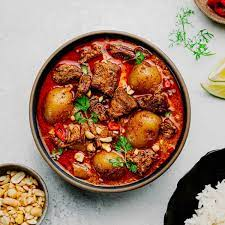

Massaman Curry

Description
Thai Muslim food has a rich tradition that has been used to help popularize Thai curries all over the world. If you’ve heard the names of ‘massaman‘ or ‘khao soi‘ curries, they are great examples of this unique and too often overlooked subculture of Thai cuisine. Thai Muslim culinary heritage usually demands red meat stewed for long periods to become tender, fragrant, and extend the shelf life of the resulting curry. However, dark meat cuts of chicken make a great substitution in these curries and allow us to shorten the cooking time.
This recipe walks the line between full-flavored tradition and not spending hours in the kitchen. The key to saving time is getting ahead on your prep. This means adding the extra strep of blanching your potatoes, shortening the time it takes to cook them in your curry later.
Ingredients
- 500g of chicken thighs, deboned
- liter coconut milk
- 2 cups chicken stock
- 2 tbsp of massaman curry paste
- 5 tbsp cooking oil (we used coconut)
- 2 potatoes, peeled, parboiled and chopped into 4-5cm chunks
- 1/2 cup of roasted and ground unsalted peanuts (for garnish)
- tbsp of tamarind juice
- 3 tbsp of palm sugar
- 1 tsp of salt
Steps
- Start by blanching your peeled potatoes in boiling water for 3-4 minutes.
- Add coconut oil to your wok over medium heat.
- When your oil is hot, place your chicken thighs in the oil (4 tbsp), skin side down.
- Allow the skin to become golden and crisp on the edges, then flip and repeat for the other side.
- Remove the chicken, set aside, and add the remaining 1 tbsp of oil to your wok. Fry your curry paste until fragrant. When ready add 1 cup of coconut milk to keep your paste from burning.
- Add potatoes, and chicken thighs. Then pour in your chicken stock and half of the remaining coconut milk.
- Cover for 20 minutes, gradually adding more coconut milk to keep the curry from getting too dry. Remember to check the potatoes occasionally, using a fork to see if they have become soft.
- When your vegetables are fork tender, season with tamarind, salt, and palm sugar to taste.
- Stir in a few dry spices (optional) and turn off the heat.
- Before serving, garnish with ground peanuts. (optional)
Home